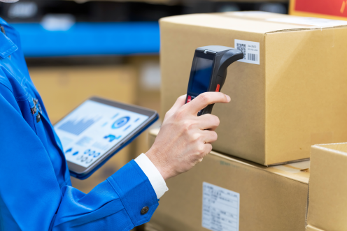
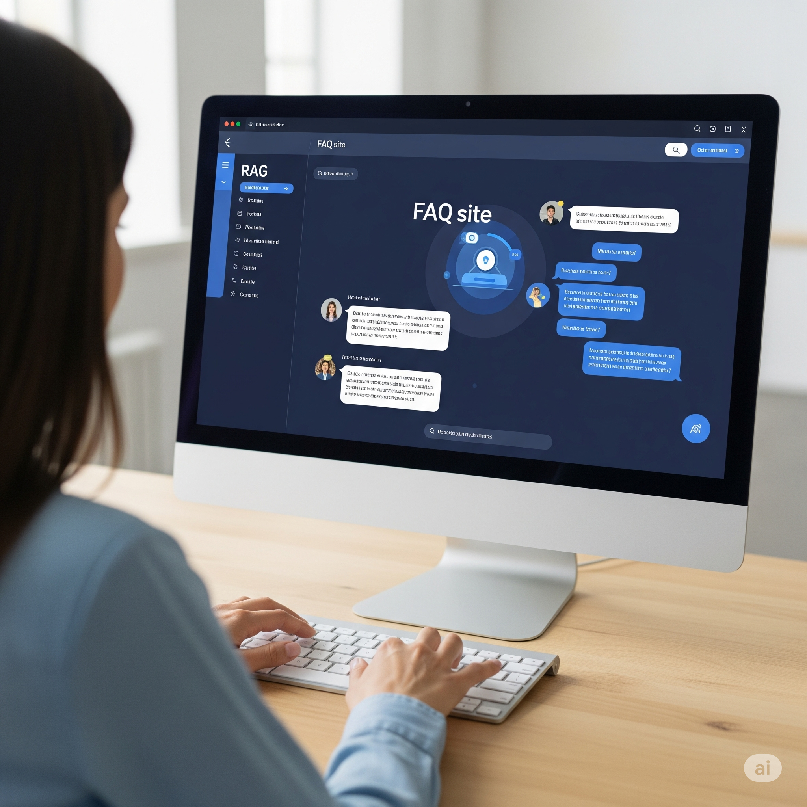

- PROFILE :
- 西崎慧 Nishizaki Kei
和歌山県和歌山市 出身
和歌山大学システム工学部メディアデザインメジャー 卒業
- CONTACT :
- nszkki.19981116@gmail.com
- ADDRESS :
- 大阪府大阪市
Osakashi, Osakafu Japan


大手素材メーカーにおいて、棚卸業務の効率化と在庫精度の向上を目的に、棚卸システムを設計・実装した。
販売・物流管理システムに棚卸機能を追加することで、リアルタイム在庫更新・業務自動化を実現。
更にはRFID/バーコードリーダーを活用しタブレット端末との連携も可能に．
プロジェクトでは、要件定義から設計・実装・運用引継ぎまでを担当した。

大手素材メーカーの老朽化したオンプレミスシステムをAzure上に段階的に移行するプロジェクト(EOSL対応)である。 3事業部に分散していたシステムのインフラを1つの環境に統合することで運用費の削減と同時に、可用性・移行性・保守性などの高い設計を検討。 初めてのPLとして、非機能要件の定義や技術要素の選定を実施し、テストや非互換調査、移行計画等一連のフェーズにおいて管理を担当。

大手素材メーカーである営業部門の見積業務を効率化・標準化するためのプライシングシステムを構築。 社内データを活用した価格推定モデルと、ワークフロー承認機能を備えたローコードアプリを実装。 私はアプリケーションの部署所属でありながらも、クラウド（PaaS）の更なる技術習得を目的としてインフラチームのリーダーを担当した。 その他、プロジェクトとしての要件定義への参加、ローコードアプリ技術検証及び開発をリードした。

大手素材メーカーある事業部における問い合わせ対応の属人化・業務負荷の課題を解決するため、生成AI技術（RAG: Retrieval-Augmented Generation）を活用した社内FAQサイトを構築。 各種業務マニュアル・議事録・仕様書等のドキュメント群をAzure上で構造化・インデックス化し、自然言語での質問に対して適切な回答を即時提示できる仕組みを提供。 本プロジェクトにおいては現在も進行中でPMを担当している。